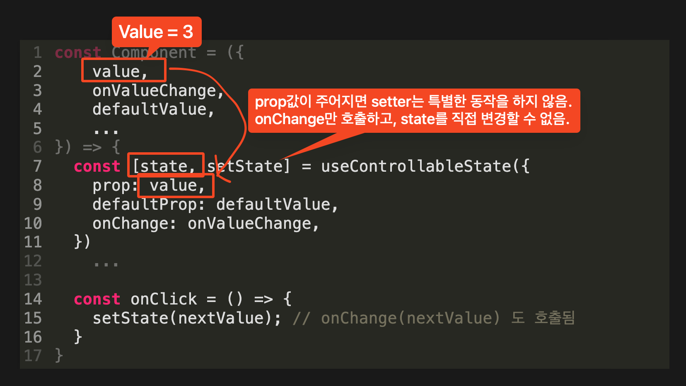
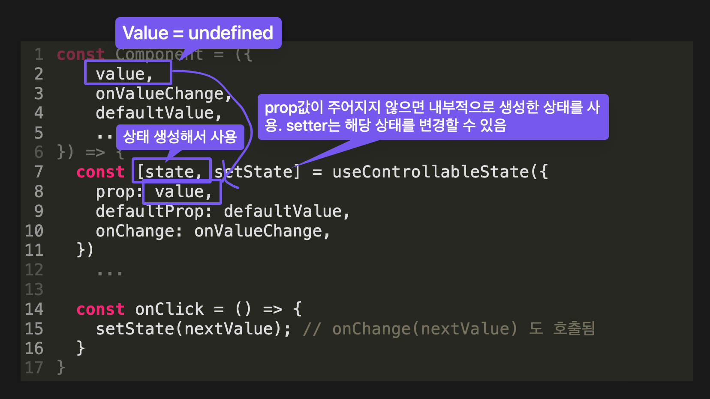

Controlled & Uncontrolled
제어 & 비제어
input
<>
<input />
// `defaultValue`는 초깃값에만 영향을 줌
<input defaultValue="123" />
</>
input
const [value, setValue] = useState('');
<>
<input
value={value}
onChange={(e) => { setValue(e.target.value) }}
/>
</>
내부 상태가 있는 모든 컴포넌트는 uncontrolled(=내부적으로 관리) 또는 controlled(=consumer가 관리)가 될 수 있다. radix-ui/philosophy.md
예시: Radix Dialog (Uncontrolled)
<>
<Dialog.Root>
<Dialog.Trigger>
트리거 버튼
</Dialog.Trigger>
<Dialog.Portal>
<Dialog.Content>
<div>Content</div>
<Dialog.Close>
닫기 버튼
</Dialog.Close>
</Dialog.Content>
</Dialog.Portal>
</Dialog.Root>
</>
<>
<Dialog.Root
open={open}
onOpenChange={(value) => setOpen(value)}
>
<Dialog.Trigger>
트리거 버튼
</Dialog.Trigger>
<Dialog.Portal>
<Dialog.Content>
<div>Content</div>
<Dialog.Close>
닫기 버튼
</Dialog.Close>
</Dialog.Content>
</Dialog.Portal>
</Dialog.Root>
</>
controlled로 사용하더라도, onOpenChange는 Dialog 스펙대로 상태가 변화해야 하는 시점에, 변화해야 하는 상태값을 인자로 호출된다.
useControllableState
const Component = ({
value,
onValueChange,
defaultValue,
...
}) => {
const [state, setState] = useControllableState({
prop: value,
defaultProp: defaultValue,
onChange: onValueChange,
})
...
const onClick = () => {
setState(nextValue); // onChange(nextValue) 도 호출됨
}
}


내부 구현
const useControllableState = ({
prop,
defaultProp,
onChange,
}) => {
...
const isControlled = prop !== undefined;
const value = isControlled ? prop : internalState;
const setValue = (nextValue) => {
if (isControlled) {
const val =
typeof nextValue === 'function'
? nextValue(prop)
: nextValue;
if (val !== prop) onChange(val);
} else {
setInternalState(nextValue);
}
}
return [value, setValue];
}
controlled, uncontrolled로 사용 가능